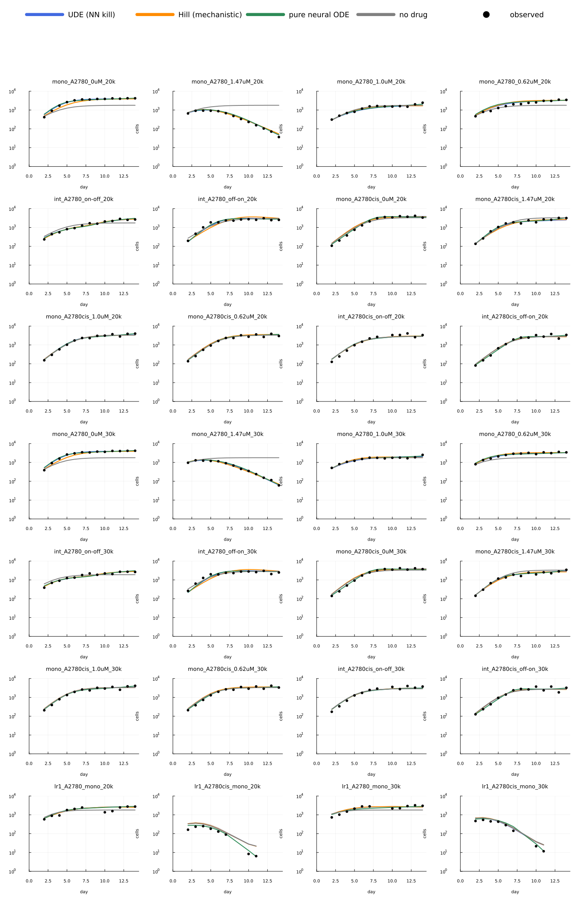

dS/dt = rSS(1 − (S + aSRR)/KS) − δS(t)S − killS(v, ρ)S, same for R; dv/dt = γ(u(t) − v). δ(t) is a delayed death active only in low-resource wells. UDE: kill = v·softplus(NN(v, ρ, line)), a 3-8-8-1 tanh net, so no drug ⇒ no kill. Comparators: Hill kill (mechanistic), no drug, and a pure neural ODE (growth rate = NN(ρ, v, line, low, t)). Competition a is fit afterwards on untreated co-culture only. Ensembles are 8-member Bayesian bootstraps over wells.
Every trajectory is predicted forward from its observed day-1 value with no refitting. The validation rows are data never used in fitting.
| model | train: drug units | train: untreated co-culture | VALIDATION: ce1 treated co-culture |
|---|---|---|---|
| UDE (NN kill) | 0.2044 | 0.5625 | 0.3312 |
| pure neural ODE | 0.1599 | 0.6018 | 0.3681 |
| no drug | 0.5856 | 0.6176 | 0.8294 |
| Hill (mechanistic) | 0.2238 | 0.7336 | 0.3528 |
| model | train: drug units | train: untreated co-culture | VALIDATION: ce1 treated co-culture |
|---|---|---|---|
| UDE (NN kill) | 0.164 | 0.2855 | 0.2436 |
| pure neural ODE | 0.1411 | 0.2968 | 0.2386 |
| no drug | 0.3167 | 0.3511 | 0.277 |
| Hill (mechanistic) | 0.1689 | 0.2948 | 0.2432 |
Refit without the held-out trajectories and predict them; the intermittent folds test an unseen dose schedule, which is what optimal control relies on.
| model | hold out on→off intermittent | hold out off→on intermittent | hold out 1 uM monoculture | hold out all 20k wells |
|---|---|---|---|---|
| no drug | 0.2988 | 0.4787 | 0.7497 | 0.6273 |
| Hill (mechanistic) | 0.1575 | 0.2922 | 0.1708 | 0.2352 |
| UDE (NN kill) | 0.1754 | 0.226 | 0.281 | 0.263 |
| pure neural ODE | 0.1928 | 0.1911 | 0.6875 | 0.2451 |
| model | kill_params | weighted_sse | bic |
|---|---|---|---|
| no drug | 0 | 3697 | 3773 |
| Hill (mechanistic) | 5 | 224.8 | 330.3 |
| UDE (NN kill) | 113 | 191.6 | 930.4 |
| pure neural ODE | 129 | 174.9 | 1008 |
r20_over_r30 is the growth-rate multiplier for 20k-seeded wells: an interval including 1 means density acts only through the starting cell number; the hold out all 20k wells fold above tests whether 30k-only fits predict 20k wells.
| model | parameter | median | lo_5 | hi_95 |
|---|---|---|---|---|
| Hill (mechanistic) | r_S | 0.647 | 0.5918 | 0.7028 |
| Hill (mechanistic) | K_S | 3902 | 3758 | 4013 |
| Hill (mechanistic) | r_R | 0.7968 | 0.7747 | 0.8093 |
| Hill (mechanistic) | K_R | 3715 | 3611 | 3827 |
| Hill (mechanistic) | r_S_low | 0.5601 | 0.5256 | 0.6136 |
| Hill (mechanistic) | δ_S_low | 0.3119 | 0.2585 | 0.3702 |
| Hill (mechanistic) | r_R_low | 0.6967 | 0.637 | 0.8682 |
| Hill (mechanistic) | δ_R_low | 2.877 | 2.198 | 4.309 |
| Hill (mechanistic) | γd | 0.08256 | 0.05404 | 0.134 |
| Hill (mechanistic) | γ | 0.3138 | 0.2998 | 0.3421 |
| Hill (mechanistic) | floor | 3.04 | 2.895 | 3.306 |
| Hill (mechanistic) | floor_low | 17.55 | 16.85 | 18.94 |
| Hill (mechanistic) | r20_over_r30 | 0.9598 | 0.9474 | 0.9826 |
| UDE (NN kill) | r_S | 0.8023 | 0.7366 | 0.8817 |
| UDE (NN kill) | K_S | 3925 | 3734 | 4091 |
| UDE (NN kill) | r_R | 0.7702 | 0.7504 | 0.78 |
| UDE (NN kill) | K_R | 3863 | 3724 | 3981 |
| UDE (NN kill) | r_S_low | 0.5436 | 0.5002 | 0.6078 |
| UDE (NN kill) | δ_S_low | 0.2962 | 0.2378 | 0.3728 |
| UDE (NN kill) | r_R_low | 0.6725 | 0.6095 | 0.9042 |
| UDE (NN kill) | δ_R_low | 2.675 | 2.05 | 4.805 |
| UDE (NN kill) | γd | 0.09219 | 0.04977 | 0.1604 |
| UDE (NN kill) | γ | 0.3 | 0.2513 | 0.3265 |
| UDE (NN kill) | floor | 3.587 | 3.062 | 3.746 |
| UDE (NN kill) | floor_low | 17.34 | 16.21 | 18.8 |
| UDE (NN kill) | r20_over_r30 | 0.9877 | 0.9776 | 1.016 |

